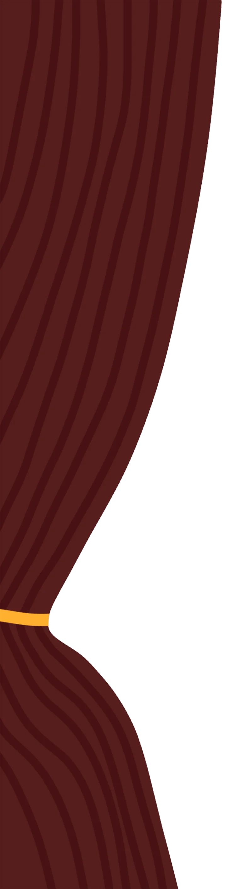
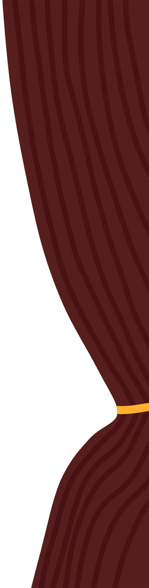
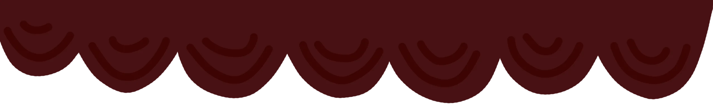
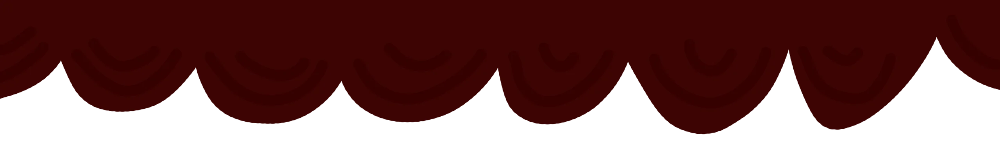

The next exhibit is an awards show designed and implemented by Ethan. It goes through the most reacted-to posts we've made over the last 10 years, culminating in the top post of all time!
It also included a fake newspaper snippet going into some more details. It also gives some personal stats for the user's reaction counts and most popular messages.